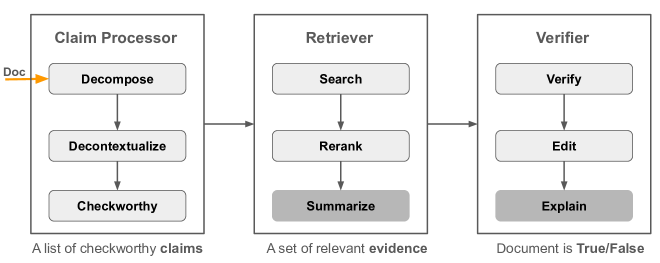
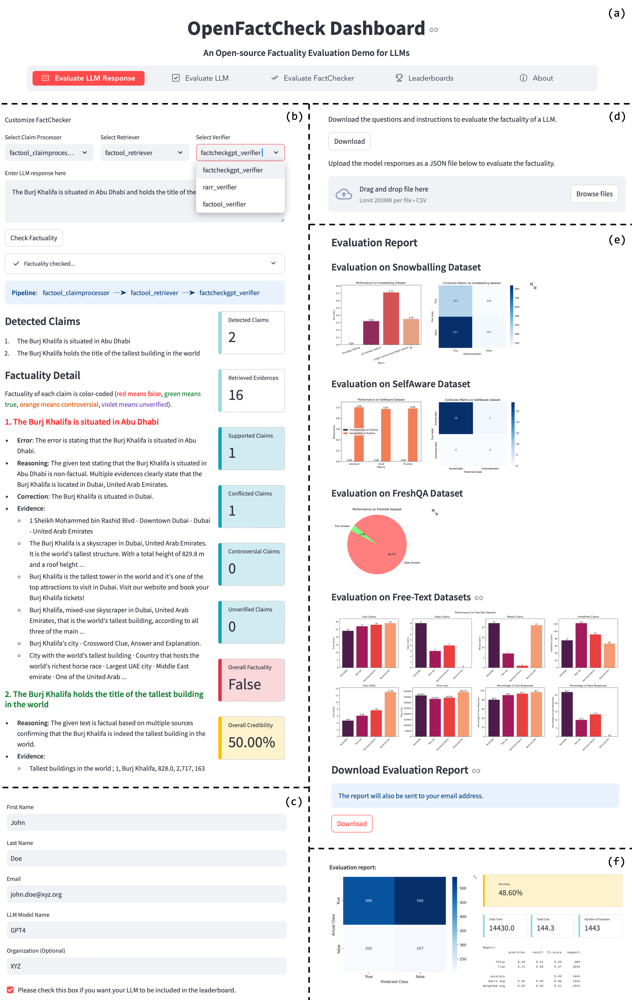

The increased use of large language models (LLMs) across a variety of real-world applications calls for automatic tools to check the factual accuracy of their outputs, as LLMs often hallucinate. This is difficult as it requires assessing the factuality of free-form open-domain responses. While there has been a lot of research on this topic, different papers use different evaluation benchmarks and measures, which makes them hard to compare and hampers future progress. To mitigate these issues, we developed OpenFactCheck, a unified framework, with three modules: (i) Response Evaluator, which allows users to easily customize an automatic fact-checking system and to assess the factuality of all claims in an input document using that system, (ii) LLM Evaluator, which assesses the overall factuality of an LLM, and (iii) Fact Checker Evaluator, a module to evaluate automatic fact-checking systems. OpenFactCheck is open-sourced and publicly released as a Python library and also as a web service.
Overview of OpenFactCheck: OpenFactCheck demo system for LLM factuality
evaluation with three modules.
ResponseEvaluator: a customized fact-checker to
identify factual errors given text inputs.
LLMEvaluator: an LLM factuality evaluator to assess
the LLM factual ability from different aspects and then to produce a report to illustrate its weaknesses
and strengths.
CheckerEvaluator: a fact-checker evaluator and
leaderboard to encourage the development of advanced checkers in terms of performance, latency, and costs.
The design of OpenFactCheck emphasizes two principles: (i) customizability and extensibility for
both users
and developers, and (ii) compatibility with existing methods and datasets.
Details of the three modules of OpenFactCheck are as follows:
ResponseEvaluator allows users to customize a fact-checking system by selecting a claim processor, a retriever, and a verifier in web pages. The current version supports the following fact-checking systems: RARR, FacTool and FactCheckGPT.

We consolidate various fact-checking systems into a three-step process, encapsulated by three classes:
claim_processor, retriever, and verifier, as surveyed in Wang, 2024. These classes are instantiated and
sequentially connected to form a pipeline that addresses the following tasks:
This sequence of tasks is referred to as solvers.
The implementation of a task solver can be flexible, just ensuring that the input and the output are aligned with the abstract class definitions. For example, evidence can be retrieved by calling SerpAPI or by searching Wikipedia using BM25, but we must return a list of relevant passages given an input claim.
Moreover, task solvers in our pipeline are not hard-coded but can be configured through a YAML configuration file. Thus, users can combine task-solver implementations from different systems (e.g., using FactCheckGPT's claim processor, RARR's retriever, and FactOOL's verifier) and start the verification from any step. For example, users can start from the step of retrieval when the input does not need decomposition.
We observed that studies assessing language models' factuality or evaluating whether the methods are effective to mitigate model hallucinations use different datasets and metrics. This makes it difficult to compare, in the same conditions, the factuality of different models as well as to compare the effectiveness of different factuality enhancement approaches.
Moreover, a lot of prior work applied datasets such as MMLU, StrategyQA, and HotpotQA to evaluate model's factuality. These datasets tend to focus on assessing the general performance, rather than factuality.
To this end, we first collect a dataset FactQA by gathering factual questions of existing datasets that are curated to probe diverse factual errors and span across a spectrum of domains, to fairly evaluate LLMs' factuality under the same criteria.
We collected factual questions from seven commonly-used corpora that is collected deliberately to assess LLM's factuality, including Snowball, SelfAware, FreshQA, FacTool, FELM-WK, FactCheckGPT, and FactScoreBio, a total of 6,480 examples shown in the table below.
| Dataset ↓ | The Ability to Evaluate | Domain | Error | Size |
|---|---|---|---|---|
| Snowball | Snowballing hallucination when model immediately output | Math, history, graph search | Type 2 | 1,500 |
| SelfAware | Understand their own limitations on the unknowns | Biology, philosophy, psychology, history | Type 1,3 | 3,369 |
| FreshQA | Answer questions changing fast over time or with false premises | Sports, entertainment, history, technology | Type 3 | 600 |
| FactOOLQA | Respond to knowledge-based questions | History, geography, biology, science | Type 1 | 50 |
| FELm | Answer world-knowledge questions | History, biology, geography, sports | Type 1 | 184 |
| FactCheckBench | Answer open-domain, false-premise questions | Technology, history, science, sports | Type 1,2 | 94 |
| FactScoreBio | Generate detailed biographies | Biography | Type 1,3 | 683 |
| FactQA (Ours) | LLM factuality against world knowledge | 482 domains, top20 accounts for 70% | Type 1,2,3 | 6,480 |
For questions that can be answered by Yes/No or have a short gold answer, we perform exact matching between the model responses and the gold standard answer to judge whether the response is factually correct or not, and then to calculate accuracy, such as for Snowball and SelfAware.
For FreshQA, we use the FreshEval method proposed in to evaluate the correctness of model's responses.
For open-domain questions from the other four datasets with free-form and long responses, there are no gold standard answers. We use automatic fact-checking systems to judge the correctness of claims and obtain the percentage of true claims as the accuracy for a response.
Automatic fact-checking systems aim to identify whether a claim or a document is true or false, but the results are not necessarily correct. To assess the accuracy of automatic fact-checkers, we gather four LLM factuality benchmarks with human-annotated factual labels for three levels of granularity text: claims/segments/documents given (question, ChatGPT response) pairs, including FactOOLQA, FELmWK, FactCheckBench, and HALUEval as shown in the following table. We refer to them as FactBench.
| Dataset ↓ | #True | #False | #Unknown | Total |
|---|---|---|---|---|
| FactOOLQA | 177 | 56 | 0 | 233 |
| FELmWK | 385 | 147 | 0 | 532 |
| FactCheckBench | 472 | 159 | 47 | 678 |
| FactBench (Ours) | 3,692 | 815 | 0 | 4,507 |
We use precision, recall, and F1-score with respect to the True or False claim/document to evaluate the effectiveness of fact-checking systems.
OpenFactCheck is open-sourced and publicly released as a Python library. The library is designed to be user-friendly and easy to use. It provides a set of APIs for users to interact with the three modules mentioned above. The library is available on PyPI and can be installed using the following command:
pip install openfactcheckFor more information on how to use the library, please refer to the library's documentation.
OpenFactCheck is also available as a web service. Users can access the web interface by visiting the following link: OpenFactCheck Web Interface. The web interface provides a user-friendly interface for users to interact with the three modules mentioned above as shown in the following figure.

OpenFactCheck Dashboard:
pip install openfactcheck.
We implemented a unified, easy-to-use, and extensible framework OpenFactCheck. It is accessible by both a Python library and a web service, supporting the customization and evaluation of automatic fact-checking systems and LLM factuality evaluation.
Specifically, OpenFactCheck allows general users to check whether a claim and a document are factual or not, and also facilitates LLM practitioners and developers to effectively and efficiently evaluate the factuality of their LLMs from various perspectives, and to assess the accuracy of automatic fact-checking systems.
In the future, we will continue to integrate new techniques, features, and evaluation benchmarks to OpenFactCheck to facilitate the research progress of LLM fact-checking.
For additional details about OpenFactCheck, dataset, results, please refer to our main paper and demo paper. Also check out the repository on GitHub and the documentation for more information.
For any query related to our work, contact Hasan Iqbal or Yuxia Wang.
@article{wang2024openfactcheck,
title={OpenFactCheck: A Unified Framework for Factuality Evaluation of LLMs},
author={Wang, Yuxia and Wang, Minghan and Iqbal, Hasan and Georgiev, Georgi and Geng, Jiahui and Nakov, Preslav},
journal={arXiv preprint arXiv:2405.05583},
year={2024}
}